Everything in one place
Staff and managers use connected views for the same tasks, schedules, requests, readings, and reviews.
Projects · Experience · Skills
Jaipur, India
Digital Transformation Lead · Business Analytics & Data Science
A record of what I have built: operations platforms, research tools, websites, and data projects, each taken from a real problem to a finished product.
↓Project index
Everything below was designed, built, and delivered. Select a project to jump to its screenshots and details.
01 / Operations platform
A staff app and management dashboard that keep everyday operational work in one place.
It brings together tasks, schedules, requests, readings, reviews, alerts, and work history for staff and managers.


Staff and managers use connected views for the same tasks, schedules, requests, readings, and reviews.
The staff app keeps work moving through weak connections and recovers safely when the signal returns.
Each person sees the right work, managers can review progress, and important actions remain traceable.
How it was launched
The launch plan covered data protection, workflow testing, weak connections, backups, staff testing, support, and recovery.
Open the full delivery map ↗
02 / Business operations system
I built an AppSheet application for assigning work, requesting approvals, recording readings, tracking history, and keeping staff and managers informed.
Real project screenshots · private details removed
The desktop view shows how work is organised. The mobile view shows what staff use while completing it.


Work schedule
This view shows how daily checks, monthly readings, and annual services are planned behind the app.
Open full resolution ↗
Setup and handover guide
The 80-page manual explains how to set up, test, use, and maintain the application.
What information is stored, where it belongs, and which rules keep it accurate.
What staff and managers can see and do inside the application.
How tasks, approvals, requests, readings, and schedules move from start to finish.
How reminders, notifications, testing, troubleshooting, and recovery are handled.
03 / Farmland decision tool
Know the land before you sign: draw a field on a map and get one plain-English report before leasing it.
The report reads government soil-lab tests taken near the field, 35 years of daily weather, satellite history, and nearby rivers, canals and ponds, then screens crops through five evidence gates. Every value is tagged as tested, estimate, or not checked, so nothing looks more certain than it is.
Real product · example field
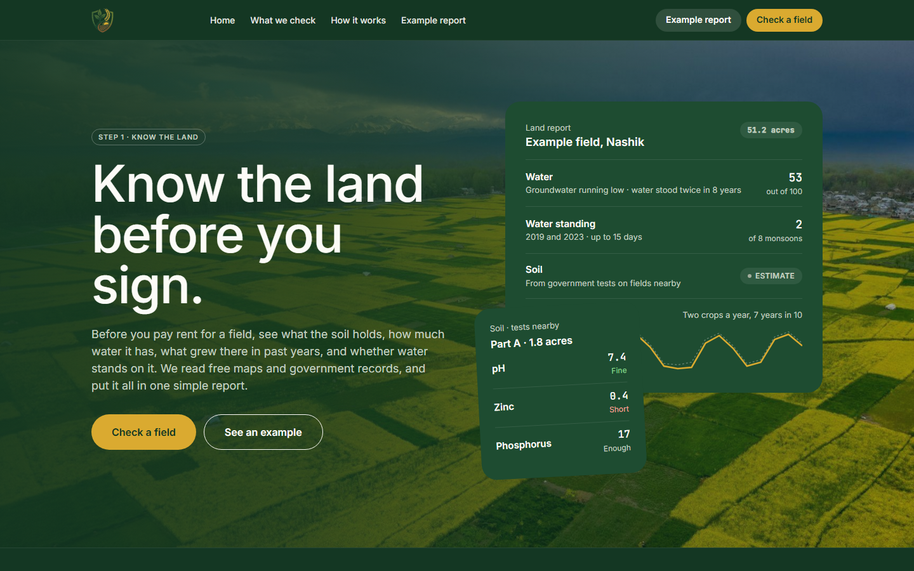
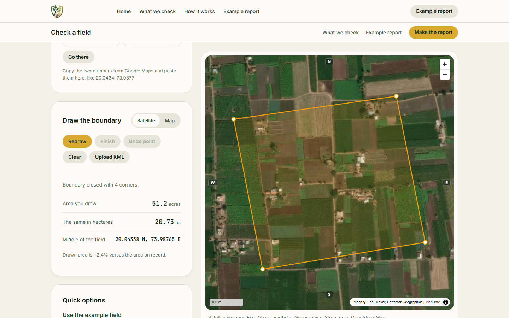
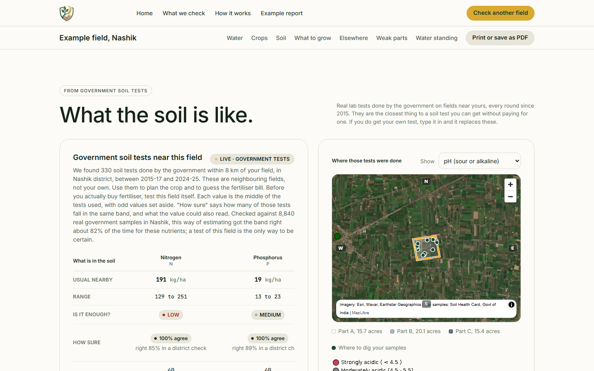
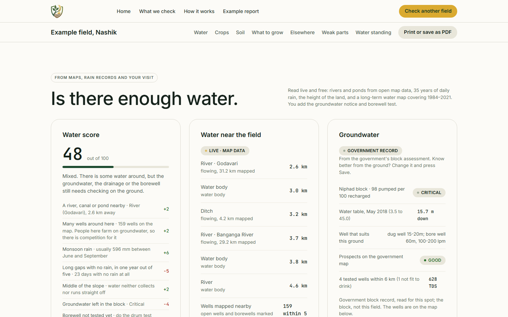
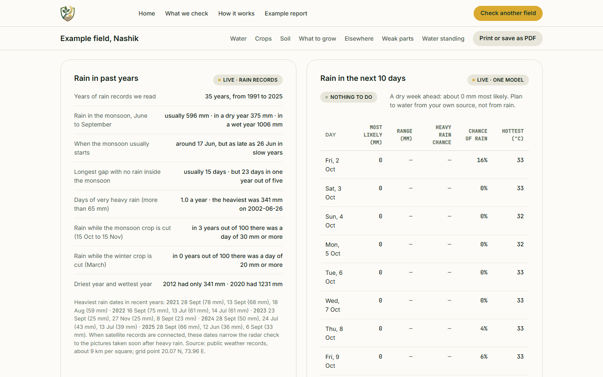
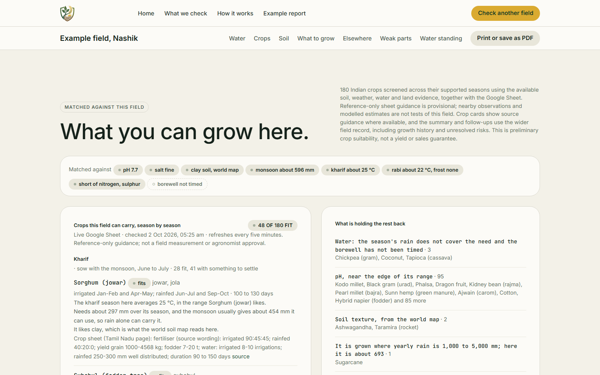
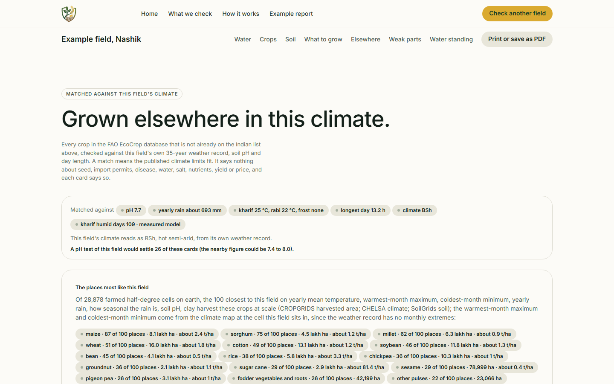
Finds the government Soil Health Card results nearest the field across twelve parameters, from nitrogen and pH to zinc and boron, and says plainly when they come from neighbouring fields.
Rivers, canals and ponds within 5 km, the long rainfall record, the shape of the land, and a borewell calculator that turns a simple drum test into daily supply.
Monthly Sentinel-2 vegetation history shows what has grown on the field, and Sentinel-1 radar shows whether water stands on it after the heaviest rain.
Crop screening is deterministic: clear fit, conditional fit, not assessable, or not suitable. AI only explains completed verdicts and never changes them.
04 / Investment research tool
A research tool for Indian IPOs that reads the offer document itself and reports every fact with the page it came from.
A Python prospectus reader maps each filing, finds the regulated chapters, and extracts the offer terms and financial statements. The dashboard built on it tracks open, upcoming and listed issues, turns each filing into a ten-section report and a two-page decision brief, and overlays the live subscription book and anchor investors.
Real product · public market data
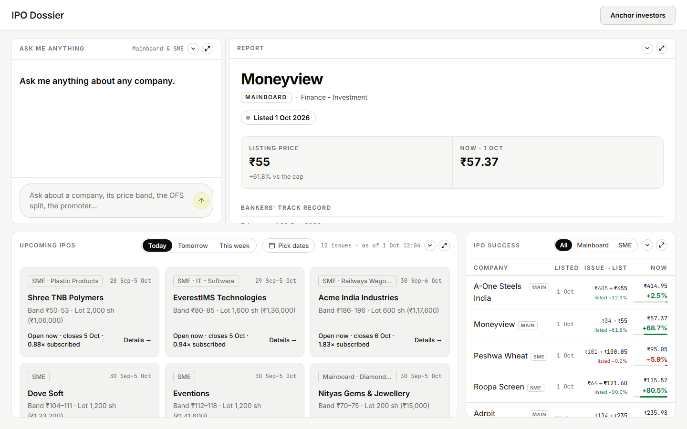
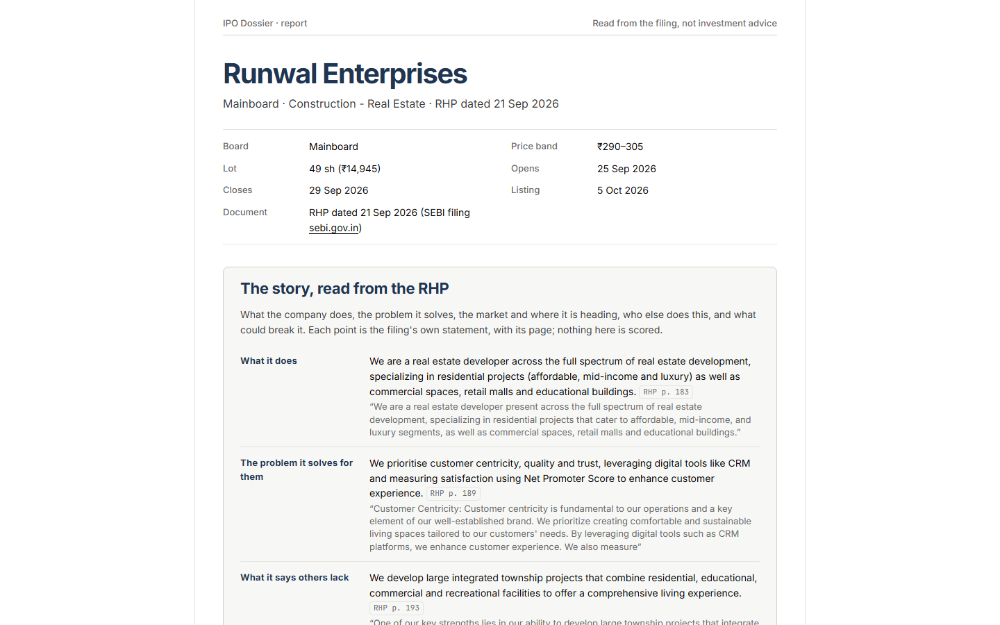
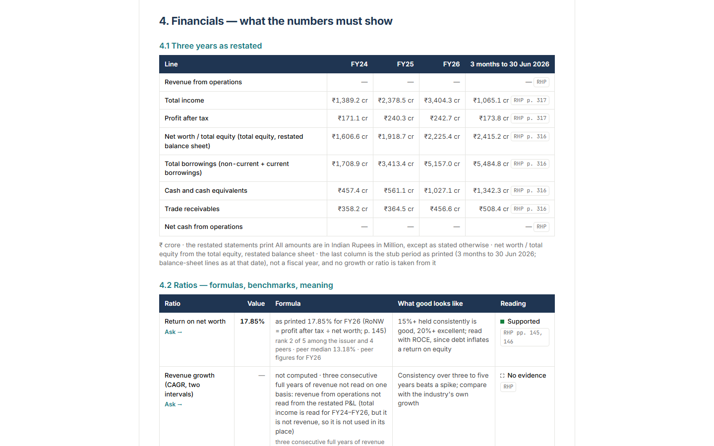
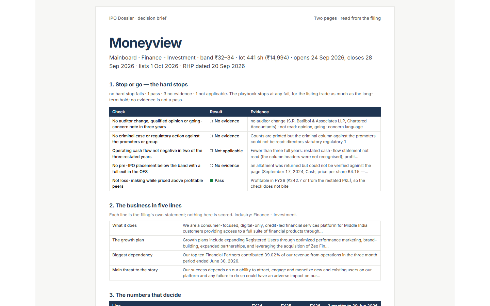
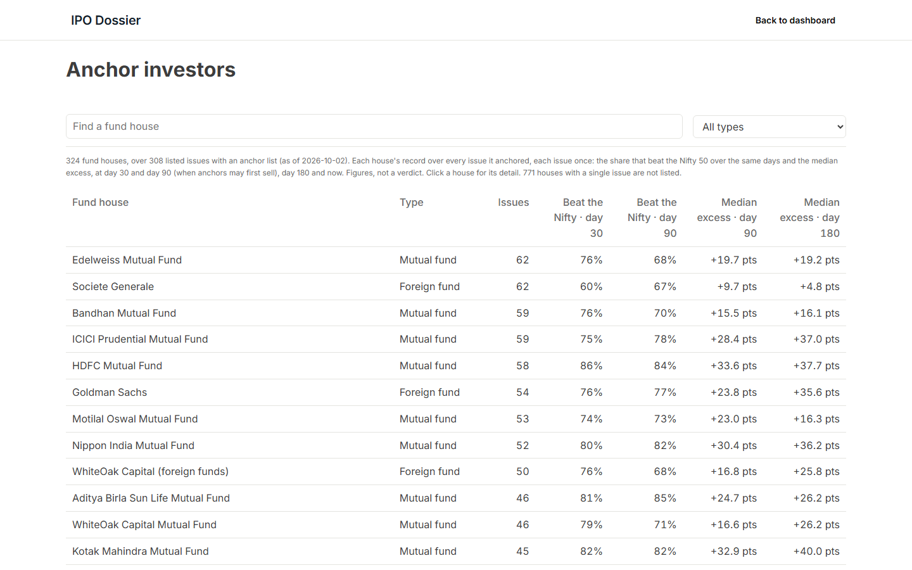
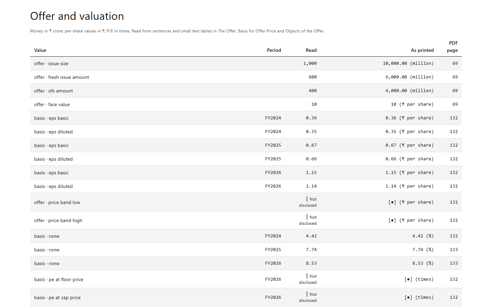
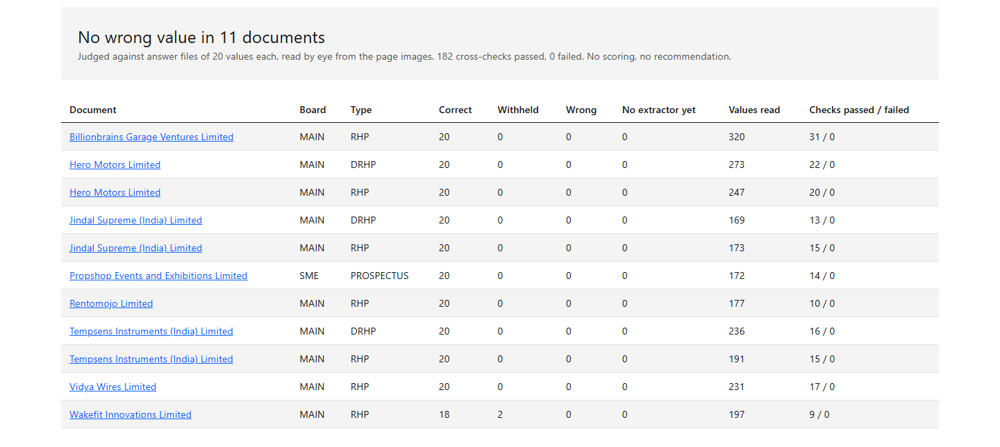
Maps the table of contents to PDF pages, finds the SEBI-mandated chapters, and pulls the offer terms, restated statements and pricing figures with their source page.
When a model fills a gap, it must return the value with its page and an exact quote. The figure is kept only if that quote is on that page and contains the number.
Subscription by investor category, the named anchor list with lock-in dates, and how recent listings have traded are laid over each report.
The report and its chat answer only from the filing and the collected data. The tool presents evidence for a decision and does not make one.
05 / Price forecasting
A forecasting project that predicts rice paddy prices from historical market data.
Taken from raw price records through data preparation to a working prediction model.
06 – 07 / Website development
Two websites with clear messaging, responsive layouts, and a direct path from first visit to enquiry.
08 – 10 / Data lab
Open any project for the full-resolution dashboard.
Experience & education
Education
Analytics, data science, and their application to business decisions.
Final research project: a Python machine-learning model predicting FC Barcelona ticket prices. Logistics Head of the MirAi Data Analytics Club.
Skills
About Madhur
I like taking a messy, manual process and turning it into something people can simply use.
My work as a Digital Transformation Lead keeps me close to everyday problems such as manual work, scattered information, and slow hand-offs. I turn them into simpler systems.
I hold a Master's in Business Analytics & Data Science and a BBA in Data Analytics, so I approach each project from both a business and a technical perspective.